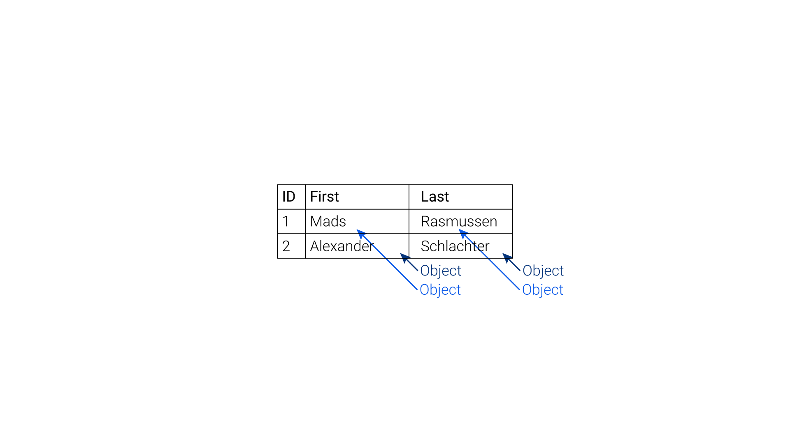

your knowledge, accessible
Table vs. graph
When we store data, we typically do it in tables
Each person or system knows how to interpret the information in these tables and how to combine the values to create meaning
Tables do, however have their limitations
- They handle contextural information poorly
- They have to be interpreted by someone who knows what the columns mean
Contextural information is therefore better handled in graphs
But how to convert table data to graph data and vice versa?
From table to graph

RDF: Resource Description Framework
Each row in a table typically represents a subject.

Each column in a table typically represents a predicate.
Each cell in a table typically represents a object.
As long as the same identifiers are used, it is easy to combine multiple datasets
From graph to table
The graph can contain the whole, but often the consumer only needs a subset
This subset is typically better consumed in table or JSON form
SPARQL: SPARQL Protocol and RDF Query Language
Data becomes explorable
Let's write a query on the graph version of Wikipedia.
The request should be something so specific that no one would have intended it when initially modelling the data.
Who co-acted in movies with Mads Mikkelsen, and how old are they today?
SELECT DISTINCT ?coActorName ?age
WHERE {
?movie dbo:starring ?theActor .
?movie dbo:starring ?otherActor .
?theActor rdfs:label "Mads Mikkelsen"@en .
?otherActor rdfs:label ?coActorName .
?otherActor dbo:birthDate ?bd .
BIND( NOW() as ?today )
BIND( YEAR(?today)-YEAR(?bd) as ?age )
FILTER(LANG(?coActorName) = "en")
}
Learnings
The data model is logically understandable from a real-world perspective rather than from a data modeling perspective
The graph structure is traversible and allows you to learn new things about your federated data sources
Your data doesn't need to be born graph data in order to be interpreted as such!
 can establish graph data from your unstructured and structured documents!
can establish graph data from your unstructured and structured documents!